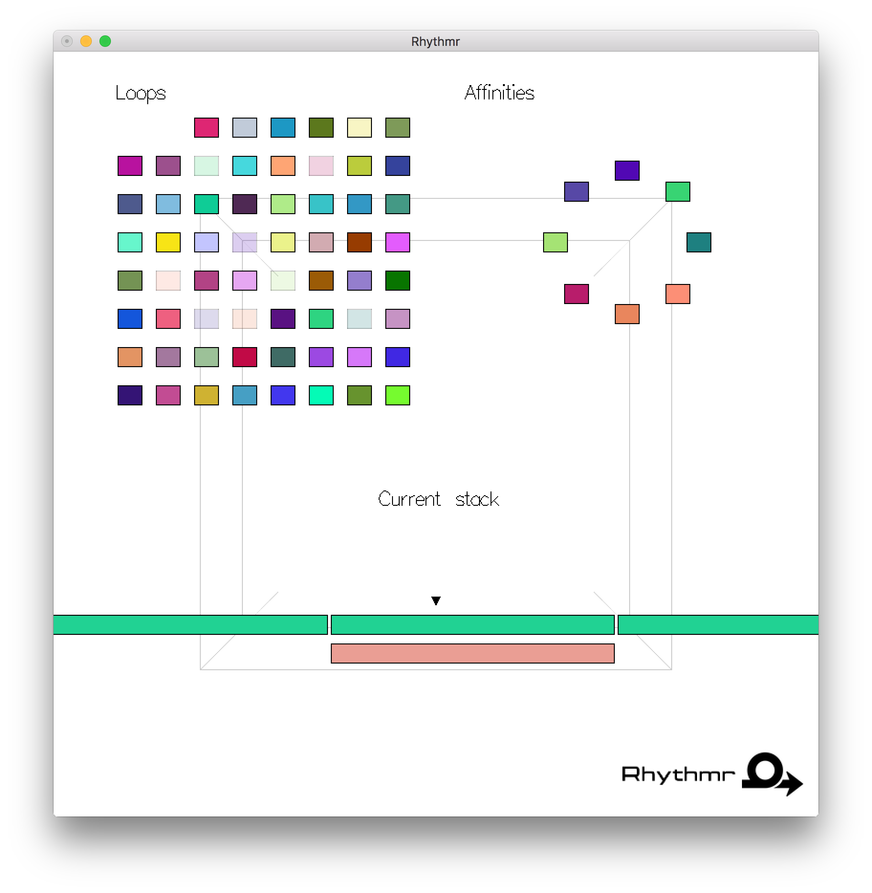

This example creates a full page background image. Try to resize the browser window to see how it always will cover the full screen (when scrolled to top), and that it scales nicely on all screen sizes.
|
Rhythmr is an interactive system, implemented in Haskell, for creating
ear-pleasing rhythm loops from randomly-acquired audio files. The user iterates
through an unending stream of randomly combined music loops, swiping left or
right on each one to indicate whether they like it or not. Rhythmr derives a
model of which combinations sound good based on user input, and from that,
produces a complete song by inserting the chosen combinations into a predefined
score.
Listen!
Source Installation About Docs test test tset |
 |